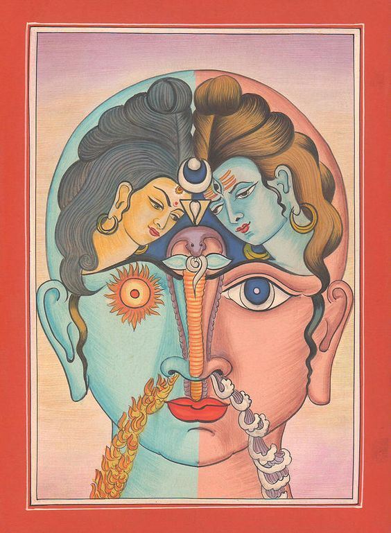

O Mistério da Kundalini
Prefácio
A Kundalini é um conceito espiritual e esotérico presente em várias tradições, principalmente no hinduísmo e no yoga. Refere-se a uma energia latente que reside na base da coluna vertebral, visualizada simbolicamente como uma serpente enroscada. Despertar a Kundalini é visto como um processo poderoso de transformação espiritual que pode levar a estados elevados de consciência e iluminação.
Origem e Significado
O termo "Kundalini" vem da palavra sânscrita "kundal," que significa "enroscado" ou "espiral." De acordo com a tradição hindu, a Kundalini é uma energia primal e divina, representando o aspecto feminino (Shakti) do universo. Ela está adormecida na base da coluna vertebral, no centro energético conhecido como Muladhara (ou chakra raiz).
Os Chakras e a Kundalini
O corpo humano, segundo a tradição do yoga, possui sete centros de energia chamados chakras, que estão alinhados ao longo da coluna vertebral:
• 1. Muladhara (Raiz): Base da coluna vertebral. Representa a base e o fundamento da existência física, segurança, sobrevivência e necessidades básicas. Está associado aos instintos de sobrevivência, sensação de segurança e estabilidade.
• 2. Swadhisthana (Sacral): Abaixo do umbigo. Relacionado às emoções, criatividade, prazer e sexualidade. Representa a capacidade de aceitar novas experiências e se relacionar com os outros de forma harmoniosa.
• 3. Manipura (Plexo Solar): Na altura do estômago. Representa o poder pessoal, autoconfiança, força de vontade e auto-estima. Está ligado ao metabolismo e ao sistema digestivo.
• 4. Anahata (Coração): No centro do peito. Foco no amor, compaixão, perdão e paz interior. Conecta as energias físicas e espirituais, promovendo equilíbrio e harmonia.
• 5. Vishuddha (Garganta): Na garganta. Associado à comunicação, expressão, verdade e criatividade. Representa a capacidade de se expressar de forma clara e verdadeira.
• 6. Ajna (Terceiro Olho): Entre as sobrancelhas. Relacionado à intuição, percepção, sabedoria e insight espiritual. Representa a mente e a consciência superior.
• 7. Sahasrara (Coroa): No topo da cabeça. Conexão espiritual, iluminação, unidade e consciência cósmica. Representa a realização do potencial espiritual e a fusão com o divino.
O despertar da Kundalini envolve a ativação e ascensão desta energia através dos chakras, culminando no chakra da coroa (Sahasrara). Este processo é visto como uma jornada de crescimento espiritual e iluminação.
Despertar da Kundalini
O despertar da Kundalini pode ocorrer de várias maneiras, como através de práticas de yoga, meditação, pranayama (técnicas de respiração), mantras, rituais tântricos, ou espontaneamente. O processo é geralmente gradual e pode ser acompanhado por uma variedade de experiências físicas, emocionais e espirituais. Algumas pessoas relatam sensações de calor, tremores, visões, e um profundo senso de unidade com o cosmos.
Significado Simbólico
Simbolicamente, o despertar da Kundalini é a união de Shakti (a energia feminina) com Shiva (a consciência masculina), que reside no chakra da coroa. Esta união representa a realização do potencial espiritual completo do indivíduo e a experiência da não-dualidade, onde o praticante se funde com a consciência universal.
Benefícios e Riscos
O despertar da Kundalini pode trazer muitos benefícios, incluindo maior criatividade, paz interior, clareza mental, e estados profundos de bem-aventurança. No entanto, é uma prática poderosa que também pode ser arriscada se não for abordada com respeito e preparação adequada. Despertares prematuros ou inadequadamente conduzidos podem levar a desequilíbrios físicos, emocionais e psicológicos.
Reflexão
A Kundalini é um mistério espiritual profundo que representa o potencial latente dentro de cada ser humano para alcançar estados elevados de consciência e unidade com o divino. Através de práticas espirituais dedicadas e orientadas, os buscadores podem despertar essa energia e iniciar uma jornada transformadora de autodescoberta e iluminação.